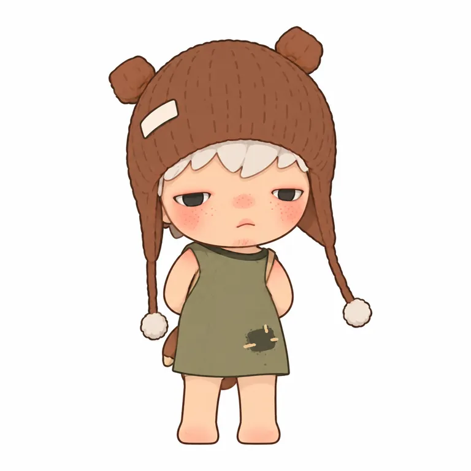

01
不是只有悲伤，是把自己留下来
先拆开作者表达、研究推断与用户证据。
STANDARD STUDY / 2026.10.20
保留内心，
那一小片旷野。
柔软与倔强，可以在同一张脸上。
从一封写给未来的信，到可被收藏的细微感受。

不是把所有情绪说清楚，
而是给那些不想解释的部分，留一个位置。
先拆开作者表达、研究推断与用户证据。
创作、首售、公司权属与品牌扩展分开记。
创作者为宣毅郎／Lang；2022年报将小野列为自有IP，并提到内部PDC团队。没有取得签约和权利转让合同。[A01] [A06]
| 时间 | 可核事件 | 性质 |
|---|---|---|
| 创作早期／日期未知 | 作者把新生孩子与一封写给未来的信视为起点；绘画先行。孩子出生年份不能直接充当角色诞生日。[A01] [A03] | self_report |
| 2021-09-28 | Ground访谈和首系列发售预告已公开。[A03] | fact |
| 2021-10-01 | The Other One首系列上市；采用官方商品页及事前预告，不采用后来回顾文章的“11月”。[A03] [A05] | fact |
| 2021-10-08—10-30 | 松美术馆首次线下艺术展，集中呈现绘画、雕塑装置、动画和潮玩。[A04] | fact |
| 2022年报 | 小野列入自有IP，公司称由内部PDC团队推出；合同条款与精确签约日未知。[A06] | fact |
| 2024-10 | 《小王子》权利方公告合作；商品页写10月25日，年份由2024年公告交叉支持。[A10] [A11] | fact |
| 2025—2026 | 品牌常设店从上海、曼谷延展到伦敦和首尔市场；首尔精确开业日仍保留稿件时态冲突。[A08] [A09] | self_report |
| 2026-04-02 | Tamed Wildgrass官网发售日期；本轮另看Canned Dreams样本。[S01] | fact |
“2021年11月首发”的后期回顾报道与官方日期冲突，采用更接近事件的一手商品页及事前预告；详见检索记录。
8个已目检样本：3幅原画、首系列图录与单款、1个2026样本。


原图归原权利人，使用原站链接展示；原站失效时请打开出处。生成图单独标记，不替代原图证据。
五条轴：原型、轮廓、记忆点、脸、反常。
| 轴 | 本轮观察 | 边界 |
|---|---|---|
| 原型与轮廓 | 类人幼童、大头小身 | 坐姿、动物外壳、箱与罐头会改变总轮廓 |
| 记忆点位置 | 脸与块状刘海的组合 | 熊耳帽、纸屋、狐狸面具均为款式变量 |
| 五官 | 短宽脸、小鼻短嘴，常有红鼻颊雀斑 | 凝视睁眼、梦游闭眼、怪兽画作换眼口 |
| 表达 | 低眼睑和微小嘴形让情绪不完全确定 | 不是无表情，也不固定等于悲伤 |
| 反常 | 幼态外形容纳倔强、退缩与社会处境 | 解释属于研究推断，避免心理诊断 |
以下只为V07的屏幕研究估计，不是官方色卡。
此款由棕帽、灰绿衣建立主体，奶白刘海和球绳提亮，浅肤色与红鼻颊集中注意力。跨到凝视、梦游、原画和鱼形款时，色彩会明显变化，不能把这一套颜色固化为全IP签名。
未测像素面积，不提供伪精确百分比；原图光照、材质、屏幕均影响色值。帽子“像针织”不代表商品为毛线。
商品事实与使用机制分列。
| 样本／时期 | 可核规格与机制 | 价格口径 |
|---|---|---|
| The Other One／2021 | ABS/PVC，约3.1英寸；12普通＋1隐藏；1:144是历史发布配比。[A03] [A05] | 2021中国首发：69元/单盒；828元/12盒 |
| Le Petit Prince／2024 | 权利方公告12普通＋2隐藏；商品页8–12cm、PVC/ABS/五金/磁铁。[A10] [A11] | 2026-10-20美国相关商品栏：19.99美元；非中国首发价 |
| Tamed Wildgrass／2026 | 官网列7–11cm，PVC/ABS/金属/电子元件；不能推为每款同样配置。[S01] | 本研究不混用CA标题与US路径的价格 |
| 生活载体与艺术化产品 | 官网相关商品可见吊饰、数据线、陶瓷雕塑；品牌空间也扩展到服装与家居。[A05] [A09] | 美国相关商品：Snoopy29.99美元；Ceramic Feather129.99美元；动态标价非成交均价 |
透明独立眼件是2021作者对该次生产的描述，不能写成“玻璃眼”，也不能扩展为所有SKU的固定工艺。[A03]
同期间比较；原表单位是人民币千元。
2025全年 · IP收入
17.35 亿元同比约138.84%
据原数计算
2026上半年 · IP收入
10.09 亿元同比约38.50%
未经审核半年口径
| 期间 | 原表：人民币千元 | 换算：亿元 | 集团占比 | 出处 |
|---|---|---|---|---|
| 2024全年 | 726,525 | 7.26525 | 5.6% | [A07] |
| 2025全年 | 1,735,235 | 17.35235 | 4.7% | [A07] |
| 2025上半年 | 728,420 | 7.28420 | 5.2% | [A08] |
| 2026上半年（未经审核） | 1,008,855 | 10.08855 | 5.9% | [A08] |
2025全年公告印刷页33；2026半年公告印刷页30。收入不是利润、授权费、GMV或作者所得。2026全年未知，不能把半年翻倍作为预测。商品、门店、渠道与供货均可能影响结果，数据不支持把增长单因归给脸或情绪。
付费规模、参与行为、个案反馈是不同层级。
SPOT报道菲律宾作者活动中，收藏者携喜爱的人偶签名。能说明活动现场的参与，不能推算年龄性别或复购率。[A12]
一例用户称“默”隐藏款有瑕疵、换货要等补货。商家称解决，后为系统自动完成；不等于买家确认满意。[A13]
Reddit一帖担忧毛绒跌落擦伤，也有回复反驳普遍质量差的判断。个案显示期待分歧，不能变成问题率。[A14]
创作先于量化用户画像。桌面陈列、状态投射、系列收藏和日常使用可作为后续访谈方向；本轮没有足以代表全体消费者的抽样研究。
每个解释都留一个替代解释。
| 机制推断 | 依据 | 边界 |
|---|---|---|
| 幼态身体和不讨好的表情形成张力，给复杂情绪留入口。 | V01/V02/V07/V09的低眼睑、短嘴与小身体；作者将多种情绪纳入角色。[A02] [A04] [A05] [S01] | V06眼睛明显睁大，不能把半闭眼定为所有SKU硬规则；也不证明治愈功效或购买因果。 |
| 主题道具把抽象状态变成可陈列的小场景。 | 纸屋包围脸、狐狸面具与遮嘴动作、罐头中的鱼形身体。[A04] [S01] | 具体情绪含义需作品语境；不能仅凭道具推断作者唯一解释。 |
| 艺术家关系、系列与生活品类共同延长接触。 | 作者签名活动、联名公告、品牌常设空间和商品目录。[A09] [A10] [A12] | 报道和品牌自述不等于代表性用户调查；集团渠道、供货和定价也影响收入。 |
某一眼神、道具或处境可能让路人代入，属于待验证假设。
作品标题、系列呼应与作者签绘为收藏者提供更深参与入口，证据仅为活动与内容样本。
目标始终是V07“流浪”，不是把多个版本合成一个母版。
以下为研究重建的实际执行全文，并非创作者原始提示词，也不证明原作品由AI制作。仅中文本轮已测。
依赖：先打开并附上V07原始参考图。只输入文字无法复用本轮结论。
把所附图片中的这一个具体公仔转换为一张白底平面插画。只使用这张图的角色，不重新设计。沿着原图逐一定位头帽、脸、眼、肩、手臂、衣摆、脚和帽绳的轮廓，保留原图的身体比例及左右不对称。人物在白色正方形画布中央，全身完整，大小占画高80%。 最重要的定位：熊耳是两个非常小的短布团，每个宽度仅为帽身宽度的约六分之一，绝不能变成大圆鼠耳。白刘海很短。眼睛为被上眼皮盖住大半的灰黑窄缝，露出眼球的高度约眼宽的四分之一，眼白极少。脸是原图的短圆脸，下颌轻微内收，粉红鼻尖、密集细雀斑红颊、极小微撅嘴的位置严格按原图。头不能额外加宽，额头不能增加高度。灰橄榄绿无袖旧背心，手臂都收在背后。画面左边露出很小的棕色包边。两条护耳绳细长、乳白球垂到两侧腰部。衣角深色磨损斑的形状按图。腿后只保留原图确实可见的几小片棕色布边，不延展成尾巴、披风或大布条。帽左边有小白布标，空白，不画文字。 颜色严格从参考图读：低饱和棕帽、乳白刘海、浅暖肤色、珊瑚红鼻颊、暗灰眼、灰橄榄衣。采用细的深棕轮廓和纯色色块，每个主体区域用均匀颜色，五官可有少量小色块辅助；只用稀少短线提示帽子质感，不能把每条织纹都描出来。不要三维渲染，不要摄影光影，不要水彩纸纹，不要立体毛线效果，不要文字与场景。输出是一张所附实物正面的平面研究转绘。下载原文
验收为研究者实际看图对照，无伪造相似度分数。ready只用于指定参考辅助平面状态，不代表用户审美选择、商业授权或量产验收。
继续停在研究与平面校准层。
借鉴给复杂情绪留白，从独立的具体处境出发，不能复制作者人生与角色故事。
研究表情与身体的反差，新角色另定原型、比例和脸部关系；不直接套用识别组合。
按陈列、携带、日用分别验证结构；主题道具服务情绪。当前只做指定SKU参考辅助平面，不进入原创及实物延展。
截至2026-10-20；官方、作者自述、研究推断和用户个案分开使用。
耀中国际学校／耀中耀华 · 发布：2025-04-11
这是主办方对创作者发言的记录，不能由孩子出生年份推出精确创作日或签约日。
POP MART Philippines · 发布：未知
官网当前履历和动态地区目录。价格不是中国首发价、销售均价或销量；角色不应概括为只有悲伤。
Groundoohart采访；搜狐账号转载 · 发布：2021-09-28
原访谈内容的转载，未取得Ground原域文章；不能将“近两年”机械换算为精确创立年份。透明独立眼件不是玻璃材质证据，也不可推广到每款。价格为当时中国市场。
松美术馆在崇真艺客的官方账号 · 发布：未知
展期与作品标签可核；页面发布日期未知。访谈与Ground有重叠，不算两个独立起源证言。已目检5张配图。
POP MART US · 发布：未知
首款上市日期强证据，不是作者最早画出角色的日期。页标题SEO可能出现Labubu字样，商品正文仍是HIRONO。未在本商品正文取得当前价。
POP MART／HKEXnews · 发布：2023-04-21
支持“公司2022年报列为自有IP”的公司披露口径；并非已经读取著作权转让合同，不支持购买价格、个人版税、签约时间或权利覆盖范围。
POP MART／HKEXnews · 发布：2026-03-25
全年业绩公告；公司按IP归集收入，不是授权费、利润、GMV、作者收入或单品销售。新分类Artist IPs本身不等同产权合同。
POP MART／HKEXnews · 发布：2026-08-20
未审计半年业绩公告。不可将半年收入翻倍当2026全年预测，不与2025全年计算同比；截至截止日2026全年未知。
POP MART via PR Newswire · 发布：2026-06-29
品牌发布稿不是独立客流核验。6月29日稿件仍将首尔6月5日写成将开业，时态矛盾，故不把6月5日当已独立核实的实际开业日。不推出门店利润。
Le Petit Prince official · 发布：2024-10-28
证明已宣布合作与系列内容；比例是发布的生产/抽取设计口径，不是购买保证。不证明联名销量。
POP MART US · 发布：未知
材质包含磁铁不能推出每一款都具有同一种磁吸玩法。图片未目检。不同地区价格不混用。
SPOT.ph · 发布：2026-01-19
采访原文已读；现场规模和行为为报道样本，不是用户人口统计或销量。配图由POP MART提供，不能称本代理实地观察。
黑猫投诉／用户提交及商家回复 · 发布：2025-01-15
仅单个自报案例，没有独立质检。商家称解决及系统自动完成，不等同买家确认满意。不采用投诉者消费金额作为IP收入或典型客单价。
Reddit r/hirono／匿名用户 · 发布：未知
原帖与评论正文已读、照片未目检。页面显示约10个月前；页脚Jan 4, 2026不能当明确发帖时间，故日期null。单帖有相反意见，不支持质量下降率或全品牌趋势。
POP MART · 发布：未知
美国路径页标题写CA，价格不从此页推为中国价；官方列2026-04-02、7–11cm、PVC/ABS/金属/电子元件，不代表每款含全部部件。